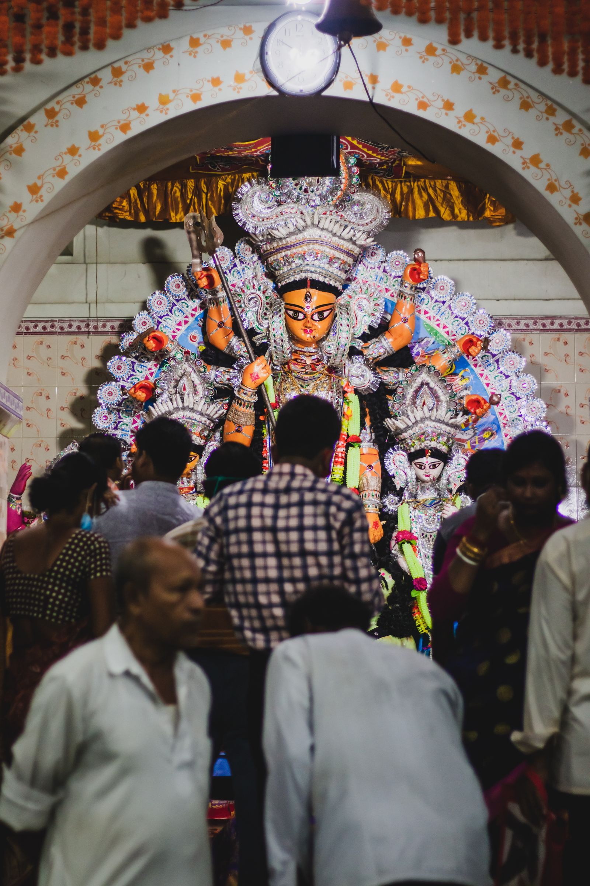
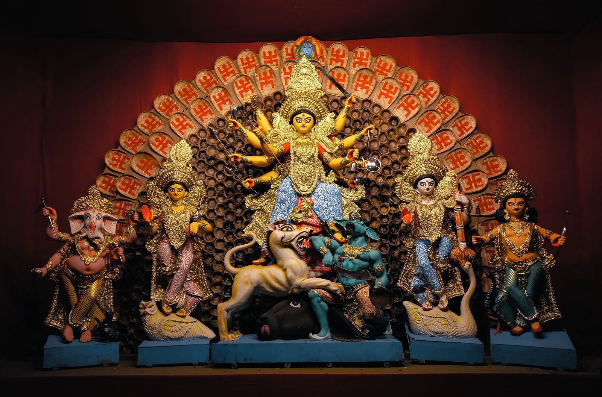
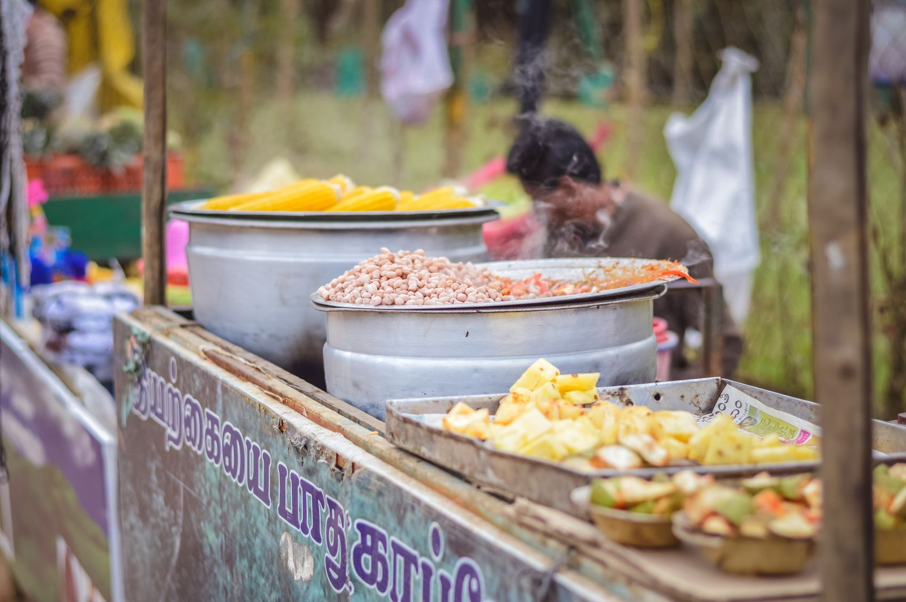

Lake Gardens · KolkataDurga Puja · Est. 200918th year
Community Utsav Host
Mitali Sengupta
The para's Durga Puja, run on a rota book and a printed budget.
The Record · Past Editions
What was asked, what was done, what it cost.
Every edition I have hosted is written up the same way it was
reported to the para: the ask, the work, the outcome, and the money — raised
and spent, printed plainly. No edition is described as a triumph. A festival
either added up or it didn't.
17th Year · 2026
The big ground
The year the puja outgrew its lane and moved to the school
field — and the year the gate stopped being a crush.
In 2025 the lane held 19,800 visitors and the Ashtami crowd backed up
past the sweet shop. The committee asked for a bigger ground without
losing the para feeling — and the school said yes, if its field came
back exactly as it was found.
What I did
Permission file opened in May: police, fire, municipality, the school's
own committee. The rota grew to 34 named volunteers, with a gate team of
six and a one-way visitor lane — in past the sweet shop, out by the
library. Bhog was cooked for 3,100 on Ashtami in two sittings instead of
one long queue. The accounts went up at the gate on Dashami morning,
before visarjan, as they have since 2023.
The outcome
23,500 visitors over five days and not one crush at the gate. The field
was handed back on 23 October with its grass intact and a thank-you letter
from the school. The ₹12,400 balance was voted at the wash-up meeting to
the December blanket drive — 210 blankets, receipts pinned beside the
accounts.
The money
132 households at ₹1,450 — under the ceiling again. Stalls brought
₹80,000, the sponsor board ₹40,000, and the rest was small donations,
counted by two people, never one.

Visitors before the idol at a Kolkata pandal. The one-way lane
exists so this crowd keeps moving. Photograph: Pexels.
“She put the accounts on a board at the gate where anyone could read
them. In seventeen years nobody had done that. The bhog queue moved, the
loudspeaker stopped at ten, and my phone did not ring once.”
Ranjit Kumar Pal · Secretary, Lake Gardens Residents' Welfare Association — on the 2026 edition
15th Year · 2024
The rain year
A Nabami storm at seven in the evening, forty minutes of it —
and a plan that had a wet-weather page.
The forecast said rain from Saptami. The committee asked the question
every committee asks — do we spend on cover we may not need? — and the
answer in the book was yes: a festival that cancels is remembered longer
than a festival that spent ₹18,000 on tarpaulin.
What I did
The pandal roof was double-sheeted, the electrical runs raised off the
ground, and the cultural programme got an indoor running order for the
school hall, rehearsed once in September. Stallholders were told the
storm plan before they paid their fees, not after.
The outcome
The storm came on Nabami at seven. Two acts moved indoors and finished
twenty minutes late; none was cancelled. The dhunuchi dancers performed
under the covered court to the loudest applause of the five days. Cleanup
finished by six the next morning, and the para's drains — cleared by our
own crew on Shashthi — took the water away.
The money
The wet-weather spend came to ₹21,300, most of it the tarpaulin and the
hall hire. The edition still closed ₹4,450 to the good, and the tarpaulin
is in the store room, labelled, for the next rain year.
16th Year · 2025
The library pandal
A theme pandal built as the para's old reading room — and a
library that reopened because of it.
The para's library had been shut for three years, its books in a damp
room. The committee asked whether the puja could carry a theme that did
some good after Dashami — not a spectacle, a repair.
What I did
The pandal was built as the library itself: shelves, reading tables, the
old signboard repainted. The decoration budget was held flat so the theme
cost carpentry, not gold. A book drive ran at the gate — visitors brought
books the way they bring flowers.
The outcome
4,700 books came in over five days. The library reopened in January
with a puja-funded roof repair and a children's corner named after the
edition. It was also our most crowded year in the lane — the crowd count
that made 2026's move to the school field unavoidable.
The money
The tightest year I have run: ₹1,600 of balance on ₹3,41,500 raised.
The roof repair, ₹38,000, was voted as a separate collection so the
festival's own books stayed honest.

The altar at a Kolkata puja — the idol at the centre of the
theme, never behind it. Photograph: Pexels.
14th Year · 2023
The open book
The first sponsor board, and the first year the accounts went
up at the gate. Both were arguments before they were traditions.
Two asks, both uncomfortable. The shops on the main road wanted to
support the puja and be seen to support it. And three households asked,
politely, where the money went — a fair question the committee had never
answered in writing.
What I did
An eight-slot sponsor board at the gate, priced at ₹5,000 a slot, with
the names printed the same size — the sweet shop and the pharmacy are the
same size on that board to this day. And the full accounts, income and
spend, printed on two sheets and pinned at the gate on Dashami morning.
The outcome
The board sold out in nine days and has sold out every year since; it
is worth ₹40,000 a year to the budget, which is ₹300 a household the para
does not have to find. The accounts board drew a small crowd of its own.
Nobody has asked where the money went since — they can read it.
The money
Balance ₹800, the closest we have ever closed. The wash-up meeting
voted the sponsor income into the base budget from 2024, which is why the
worksheet on the front page counts it as a line, not a windfall.

The fair row: twelve stalls in 2023, sixteen by 2026 — each one
pays its fee into the same open book. Photograph: Pexels.
Seventeen editions of practice. Your society could be the next page.
First meeting is free and lasts one hour. Bring your last budget, if you have one.